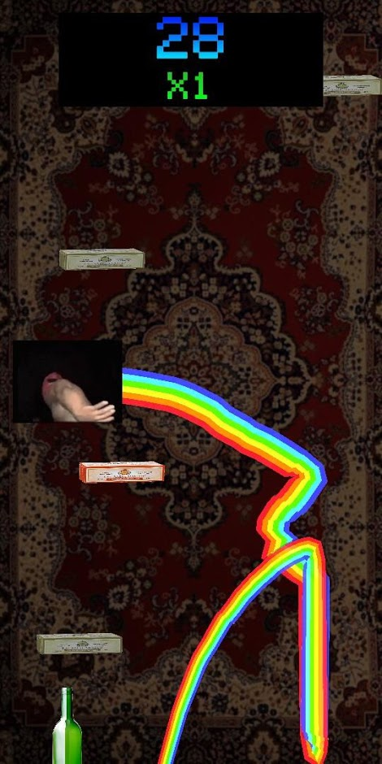
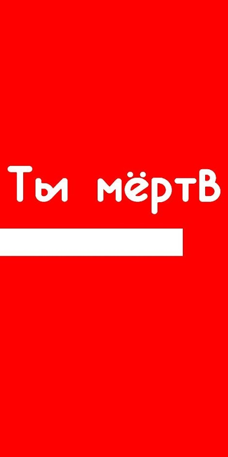
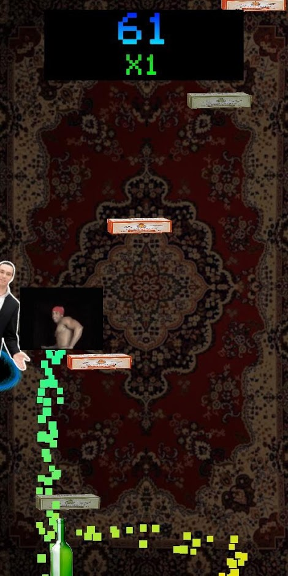
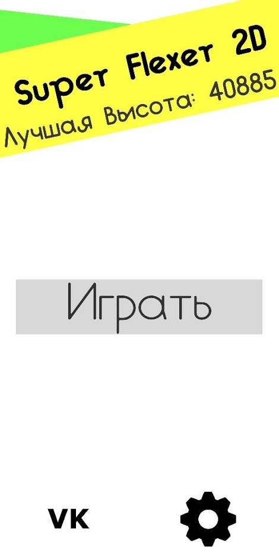

DT Archive
Архив проектов - Ещё живое | [на главную]
Название: Super Flexer 2D
Источники:
Google Play
GDrive
Исходный код: [закрытый]
ЯП: C#
Просто фановая игра, сделанная за 1-2 недели по идеям друга.
Бесконечный "джампер" по типу игры "doodle jump", где ты прыгаешь за Рикардо Милоса по сыркам Б.Ю. Александров под gachi ремиксы.
Игра получилась прикольная, хоть и с некоторыми проблемами.
Скриншоты:



